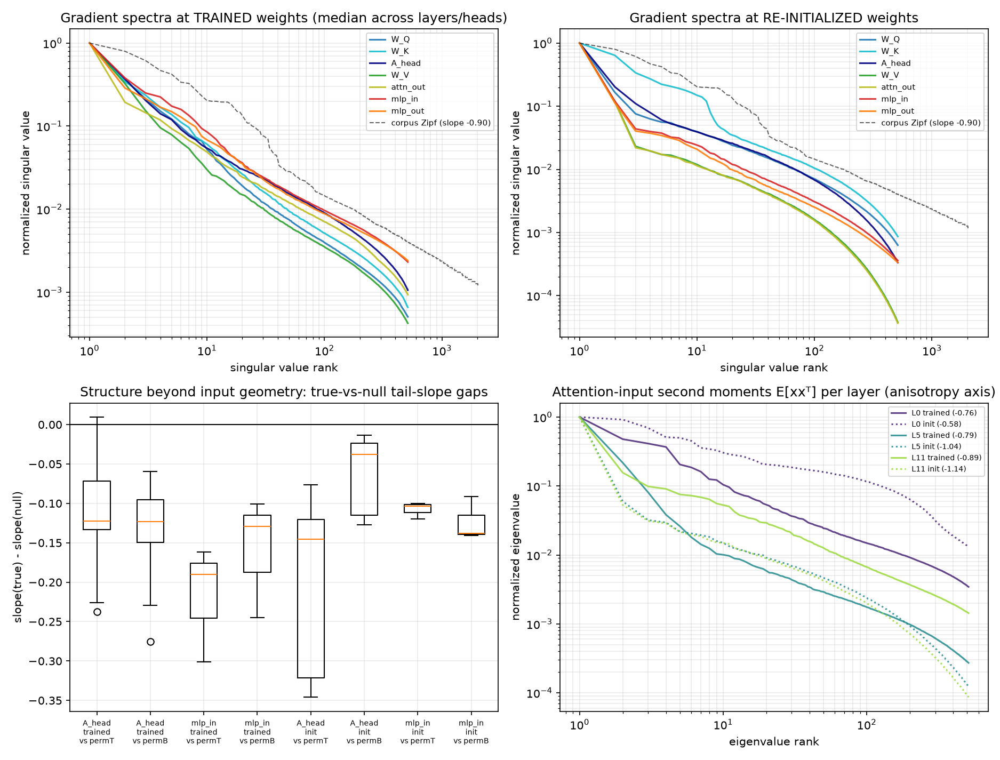
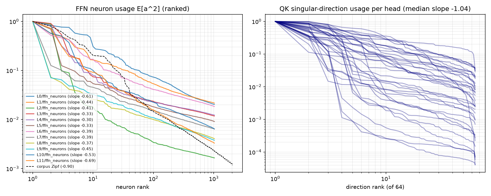

Kim, Nichani, Wu, Bietti & Lee (arXiv:2603.26554) show
Muon beats SGD at learning associative memories exactly when the stored associations have power-law
(Zipf) frequencies: the gradient is a frequency-weighted sum of rank-one associations
G ≈ Σᵢ pᵢuᵢvᵢᵀ whose heavy-tailed singular spectrum Muon's polar map amplifies.
Henry's question: "I would expect that to sort of be the case for the FFN in a transformer, but would
that be the case for the KQ circuit of self-attention? not sure how to think of it there."
This probe measures the Muon-relevant statistics on a real pre-trained transformer (GPT-2 124M,
WikiText-2) and compares the FFN and QK circuits directly. Probe: zipf_qk_probe.py.
In the paper's model, Muon's capacity advantage (d1+1/2α vs d1/2α stored facts) comes from one structural property: the gradient of the recall loss is a sum of near-rank-one associations weighted by power-law frequencies. The transformer-side question is whether the gradients that Muon would actually precondition have that structure. We probe GPT-2 (124M) because it has no rotary embeddings, so each head's QK circuit is exactly one bilinear form Ah = WQhWKhT/√dh — the associative-memory matrix of attention in the Bietti et al. framing the paper builds on. Over ~49k tokens of WikiText-2 we accumulate:

| circuit, setting | tail slope (true) | gap vs permT (content+position null) |
gap vs permB (content-only null) | reading |
|---|---|---|---|---|
| QK ∂L/∂A, trained (36 heads) | −0.82 median | −0.12 (34/36 steeper) | −0.12 (36/36 steeper) | genuine content-association structure |
| FFN ∂L/∂Win, trained (3 layers) | −0.79 median | −0.19 (3/3) | −0.13 (3/3) | genuine, slightly larger vs permT |
| QK ∂L/∂A, init | −1.01 median | −0.15 (36/36) | −0.04 (36/36) | structure is mostly positional |
| FFN ∂L/∂Win, init | −0.93 median | −0.10 (3/3) | −0.14 (3/3) | content structure present from the start |
Tail slope = log-log OLS slope of the normalized singular spectrum over ranks 8–256 (1.5 decades — it quantifies tail heaviness but cannot by itself distinguish a power law from e.g. a lognormal). Gap = slope(true) − slope(null); negative means the real gradient's tail is steeper than a null with identical error statistics and input marginals but destroyed input–error association.

Usage is heavy-tailed in both circuits — more so in QK. Ranked FFN neuron energies decay with slopes −0.30…−0.69 across layers; the score energy through the trained Ah's singular directions decays with per-layer median slopes −1.00…−1.19 (per-head spread is wide, and layer-0 contains a distinctly steeper subpopulation consistent with positional heads). Attention does not exercise its stored match-directions uniformly; it leans on a Zipf-like head of frequently-used associations at least as strongly as the FFN leans on its frequently-fired neurons.
Empirically, yes: the KQ circuit sees the same kind of power-law association structure as the FFN — at trained weights, to a comparable degree. The per-head associative-memory gradients ∂L/∂Ah have heavy tails beyond what input geometry alone produces (steeper than the content-destroyed null in 34–36 of 36 heads), and the trained QK matrix's stored directions are exercised with strongly skewed, Zipf-like frequencies. Whatever advantage the paper's mechanism confers on Muon for FFN-style key–value memories should transfer to the QK matrices.
Two refinements matter, though. First, most of the raw "Zipfiness" of gradient spectra is generic geometry: shuffled-input nulls with no association structure at all already produce tail slopes of ≈ −0.7 on the same pipeline, so "the spectra look like the corpus Zipf curve" is weak evidence by itself — the association-specific signal is the ~0.1–0.2 slope gap over the null, present for both circuits. Second, the two circuits arrive at their Zipf structure differently. At random initialization — the regime the paper's one-step analysis describes — the FFN gradient already carries content-association structure, but the QK gradient's heavy tail is almost entirely positional (destroy content while preserving position and the null reproduces it; gap −0.04). Content-based Zipf structure in the QK circuit is something training builds. So for the earliest phase of training, the paper's mechanism applies to attention through positional associations first, with the FFN-style content-frequency story arriving later — a concrete, testable refinement of "Zipf's law motivates the data model" for attention.
One shared caveat: both circuits' inputs are strongly anisotropic (second-moment tail slopes −0.6…−1.1), which is the paper's Figure-6 axis (κ > 0) on which Muon cedes ground to Newton's method. That caveat applies to the FFN just as much as to attention, so it does not differentiate the two — but it does mean neither circuit lives in the isotropic-embedding regime where Muon provably matches Newton.
uv run zipf_qk_probe.py --smoke # 2-batch pipeline check (self-check: dL/dA vs autograd ~2e-6)
uv run zipf_qk_probe.py # full probe: 48 batches x (trained + re-init GPT-2), ~35 s on MPS
Artifacts: zipf_qk_spectra.png, zipf_qk_usage.png,
zipf_qk_results.json (all spectra, null slopes, usage curves, per-layer second moments).
The probe design was adversarially reviewed before the final run; the review's null experiments are what
turned the raw-slope observation into the true-vs-null gap methodology reported here, and caught a
per-layer covariance bug in the usage metric.